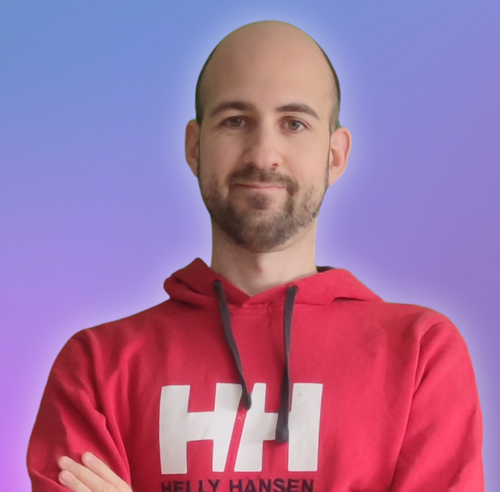
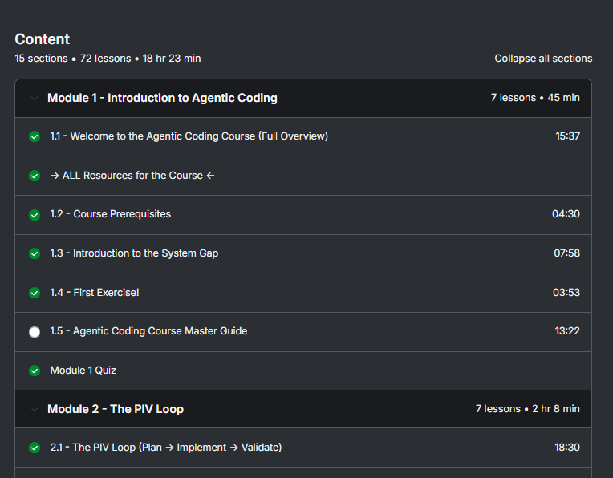
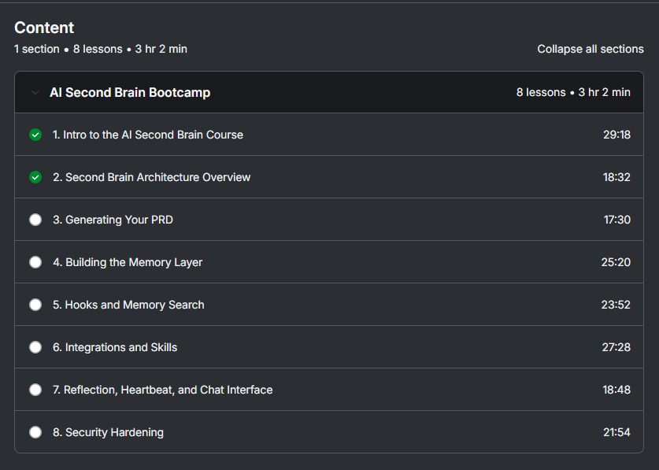
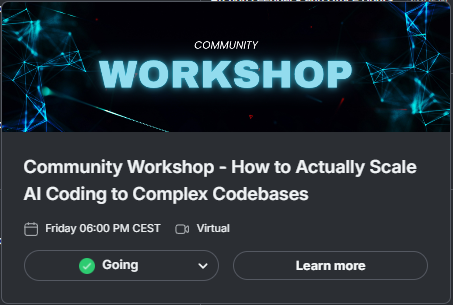
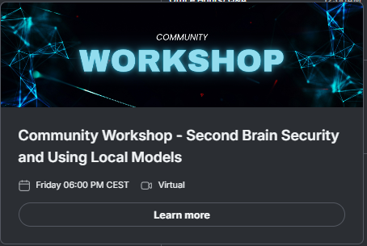

Werbung
Inside Dynamous
ALONE?
Most devs build with AI alone.
1,000+ build together →
Inside Dynamous
0+
BUILDERS
Building together
⚡ Joining Forces ⚡

Cole Medin
Founder · Dynamous
0K
subscribers
@ColeMedin
━━ ◆ ━━
Rasmus
Core team
0K
subs
@RasmusWiding

Thomas
Core team · Me
0K
subs
@DIYSmartCode
0K
creator-strong
Course · 01 / 02
AGENTIC CODING
18
MODULES

From idea to production-grade software
Course · 02 / 02
AI SECOND BRAINBOOTCAMP
8
LESSONS
✓Privacy-first OpenClaw alternative

Real builders. Real time.
Ship together.



1
Friday workshops
2
Daily hangouts
3
Debug-together sessions
One Calendar
Something every week.

PICK ANY WEEK · ALWAYS ON
+ Every past event · recorded & yours
BUT —